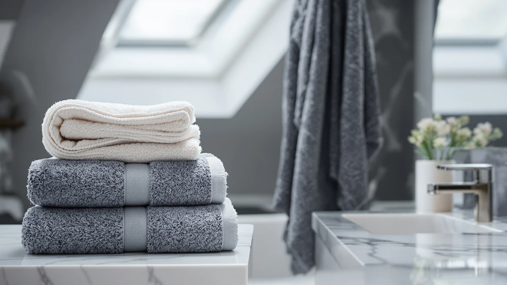

How to Install Bathroom Towel Radiator (2026)
Prices and picks verified as of August 2026. Independent, reader-supported reviews.


Things to Know Before You Buy
- Weight changes everything. A full towel radiator can weigh 40 pounds or more, so wall anchors alone rarely cut it. Hit at least one stud, or use anchors rated well above the finished weight.
- Match your pipe centers. Radiators are sold by the distance between their valve connections. Measure your existing pipe centers before you buy, or you will fight the plumbing to make it fit.
- Shutting off water is non-negotiable. Isolate the supply and drain that section of pipe before you disconnect anything, even on a simple swap.
- PTFE tape beats plumber's putty. Threaded radiator valve connections seal with PTFE tape wrapped clockwise, not putty or paste alone.
- Bleeding removes trapped air. A radiator that gurgles or heats unevenly almost always has air in it, and a bleed key fixes that in seconds.
How to install bathroom towel radiator hardware comes down to two jobs stacked on top of each other: hanging a heavy unit level on solid brackets, then connecting it to your heating pipework without a drip. A towel radiator weighs far more than a towel bar, often 15 to 30 pounds empty and more once the water fills it, so the anchoring has to hold on the first try. Most homeowners can handle this project themselves as a straight swap, replacing an old radiator or rail at the same pipe centers, in about an hour and a half with a few plumbing tools.
This guide covers a like-for-like install: new radiator, same pipe locations, same valves or direct replacements. If you are moving the pipework itself or wiring in an electric element for the first time, bring in a licensed plumber or electrician for that part, then hang the unit yourself once the connections are roughed in. Get the bracket height right, the valves sealed, and the system bled properly, and you end up with a warm towel rail that heats the room and dries towels faster than a bar ever could.
What You'll Need
Gather everything below before you shut off the water, since a mid-job trip to the hardware store leaves a drained towel radiator sitting open on your bathroom wall.
- Supplies: PTFE thread seal tape, heavy-duty wall anchors or toggle bolts, replacement isolation valves
- Tools: adjustable wrench, power drill, stud finder, level, radiator bleed key
Step 1: Shut off the water and drain the pipework
Locate the isolation valves at the base of the existing towel radiator or towel bar and turn them fully clockwise to shut off the water supply. If your bathroom does not have dedicated isolation valves yet, shut off the main supply to that heating zone at the boiler or manifold instead, since working on live pipework risks a flood you cannot easily stop.
Open the valve's drain point, or loosen the union nut slightly over a bucket and old towels, and let the water in that section run out. A standard radiator holds a gallon or more, so give it a few minutes and keep a mop nearby. Once the flow slows to a drip, you are clear to disconnect the old fixture.
Step 2: Remove the old fixture and mark the new bracket positions
With the pipes drained, loosen the union nuts connecting the old radiator or towel rail to the valves and lift the unit free. Set it aside on an old towel, since a few ounces of water usually remain trapped inside even after draining.
Hold the new towel radiator's mounting brackets against the wall, lining the valve connections up with your existing pipe stubs, and check the fit before you mark anything. Use a level across the top of the unit and pencil in each bracket hole. This is the step that decides whether the finished radiator hangs straight, so take the extra minute to double check the marks against both the wall and the pipe centers.
Step 3: Mount the wall brackets
Run a stud finder across your bracket marks and note any hits. A filled towel radiator easily weighs 40 pounds, so a stud gives you the strongest hold; where you land on open drywall, use toggle bolts or heavy-duty anchors rated well above that weight, the same standard you would use for a loaded towel rack.
Drill your pilot holes, set the anchors, and screw each bracket to the wall. Snug the screws down firmly but stop as soon as the bracket sits flush, since overtightening into an anchor strips it and ruins the hold. Recheck the brackets with a level before moving on, because a radiator hung on uneven brackets never sits flat against the wall.
Step 4: Connect the valves and hang the radiator
Wrap PTFE thread seal tape clockwise around each threaded valve connection, using six to eight wraps for a solid seal. Thread the new or reused valves onto the radiator's connection points by hand first, then snug them with an adjustable wrench until they stop turning freely. Do not overtighten; a compressed PTFE seal fails as easily as an undertightened one.
Lift the towel radiator onto the mounted brackets, checking that it seats fully and sits level. Connect the valve tails to your existing pipe stubs with the union nuts, hand-tightening first, then finishing with a wrench while holding the valve body steady so you do not twist the pipework behind the wall.
Step 5: Refill the system, bleed the air, and check for leaks
Open both isolation valves slowly to let water back into the towel radiator. Opening them too fast forces air through the system unevenly and can bang the pipework. Watch the newly connected joints closely for the first few minutes; a slow drip at this stage means a union nut needs another quarter turn or the PTFE tape needs redoing.
Once the radiator is full, fit a bleed key to the valve at the top corner and turn it a quarter turn. You will hear a hiss of escaping air, then water; close the valve the moment liquid appears. Wipe down every connection with a dry paper towel and check it again after 24 hours, since a joint that looks dry immediately after installation sometimes reveals a slow weep once the pipework settles.
Common Mistakes to Avoid
The mistake that causes the most damage is skipping the isolation valves and assuming a quick disconnect will not flood the bathroom. Even a small section of pipe holds enough water to soak a subfloor, so always shut off the supply and drain the line before you loosen a single fitting.
Undersized anchors cause the second common failure. A dry towel bar barely stresses its brackets, but a filled towel radiator weighs 40 pounds or more, and that load pulls straight anchors out of drywall within months. Hit a stud whenever your bracket marks allow it, and use toggle bolts rated well above the radiator's filled weight everywhere else.
People also skip the PTFE tape or wrap it in the wrong direction. Tape applied counterclockwise unwinds as you thread the fitting on, leaving the joint unsealed no matter how hard you tighten it. Wrap clockwise, six to eight turns, and thread the connection by hand before reaching for a wrench.
Finally, rushing the bleed step leaves trapped air that makes the radiator heat unevenly or gurgle for weeks. Bleed slowly, close the valve the instant water appears instead of air, and recheck every joint the next day. A radiator that looks dry right after installation sometimes shows a slow weep once the pipework settles under normal pressure, and catching that early beats discovering it through a stained ceiling below.
Our Top Picks
A working towel radiator earns its keep once you hang absorbent towels on it. These three picks dry fast, feel plush against a warm rail, and hold up to daily use once your new radiator is doing the work.

Editor’s Pick
Luxury White Bath Towel Set
This ring-spun cotton set absorbs quickly and warms fast on a heated rail, so towels feel ready the moment you reach for them. A clean, classic white that works with any bathroom finish.
$39.99
Check Price on Amazon
Best Value
American Soft Linen Luxury 6
A six-piece set gives you enough rotation to keep a towel drying on the radiator at all times while spares stay in the closet. Reviewers consistently note the soft hand holds up over repeated washes.
$39.99
Check Price on Amazon
Premium Choice
Utopia Towels 8 Piece Luxury
Eight pieces cover a full household, including hand towels and washcloths sized to hang on the radiator's shorter bars. A practical set for a family bathroom where the rail rarely sits empty.
$30.39
Check Price on AmazonFrequently Asked Questions
Can I install a bathroom towel radiator myself, or do I need a plumber?
A like-for-like swap, where the new radiator connects to the same pipe centers and valves, is a reasonable DIY project for anyone comfortable with a wrench and PTFE tape. Call a licensed plumber if you are moving the pipework to a new location, and an electrician for any hardwired electric element, since that work falls outside a straightforward radiator swap.
How much weight can drywall anchors hold for a towel radiator?
Standard plastic anchors max out around 10 to 20 pounds, well under a filled towel radiator's weight. Toggle bolts or heavy-duty self-drilling anchors rated for 50 pounds or more give you the margin a full radiator actually needs.
Do I need to drain the whole heating system to swap a towel radiator?
No. Isolation valves at the radiator let you drain only that section of pipe, so the rest of your heating system stays full and pressurized. If your bathroom lacks dedicated isolation valves, you will need to shut off and drain the whole zone at the boiler or manifold instead.
What size drill bit do I need for wall anchors on a radiator bracket?
Match the bit to the anchor body rather than the screw, which usually means a 1/4 to 5/16 inch bit for toggle bolts. Check the packaging for the exact size, since an oversized hole lets the anchor spin instead of grip.
How do I know if my towel radiator needs bleeding?
A gurgling sound or a radiator that stays cold at the top while the bottom heats normally both point to trapped air. Fit a bleed key to the top valve, open it a quarter turn until the hiss changes to a trickle of water, then close it.
Verdict
Once you know how to install a bathroom towel radiator as a like-for-like swap, the job comes down to draining the pipework, anchoring brackets rated for the finished weight, sealing the valve threads with PTFE tape, and bleeding the air out before you call it done. None of that demands a trade license if you are reusing existing pipe centers and valves; it demands patience and a level. Skip the isolation valves or undersize the anchors, and the shortcut shows up later as a leak or a radiator pulling loose from the wall.
A radiator that actually heats towels is only half the upgrade. Hang a White Classic set on it and you get a towel that dries fast and stays warm long enough to matter on a cold morning, instead of one that sits damp waiting its turn. Get the install right and pair it with towels worth warming, and the whole bathroom routine improves for the cost of an afternoon's work.